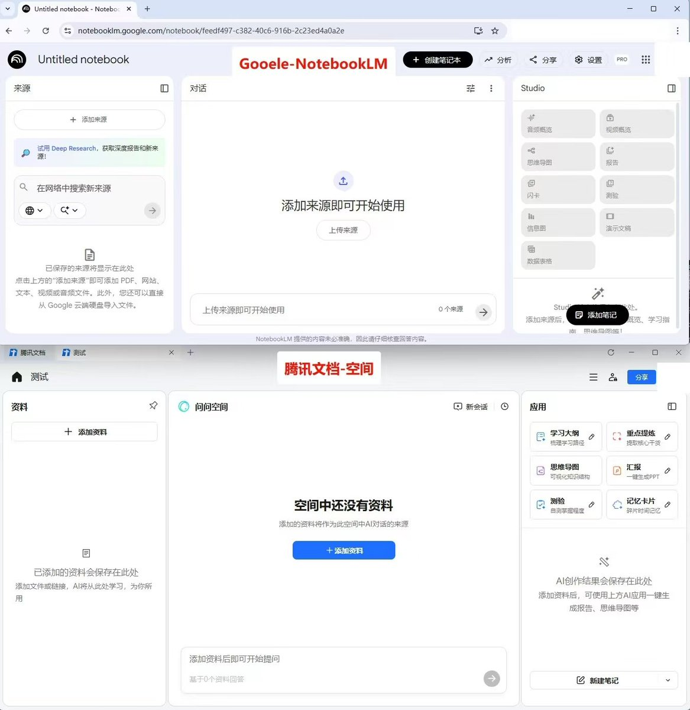
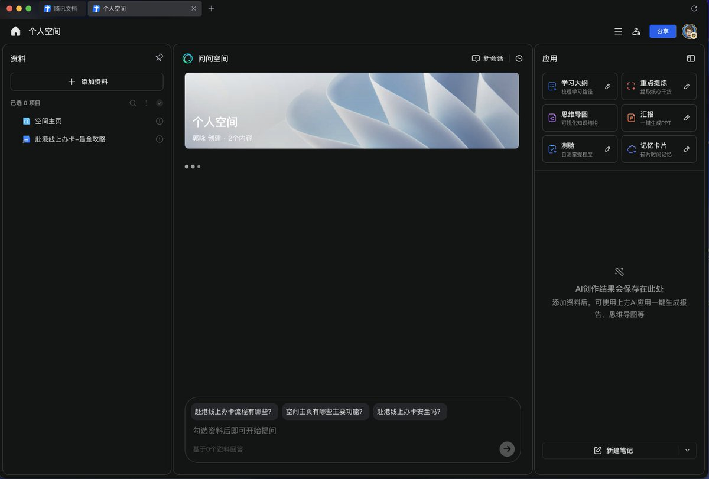
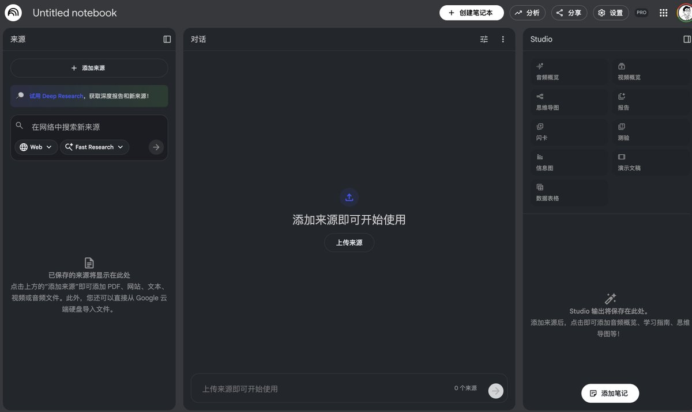

奶昔🥤
@realNyarime
一个以“抄袭”起家的公司，反而带坏了社会价值观，原来靠抄也能成功。
用户不在乎用了什么技术、开不开源，而在乎体验上好不好用。
抄得精髓也算本事，只要市场接受、商业化成功，就可以骗融资了。
雪球最后越滚越大，上市了。
于是大家就争先恐后地效仿，却没有意识到“每个成功的案例是不可复制的”。



Jason
@EvanWritesX
腾讯文档又在 Google NotebookLM 抄到精髓了
在过去30年
无论抄谁的产品
都能抄到毛都不剩 https://t.co/KBuxl8zBOW